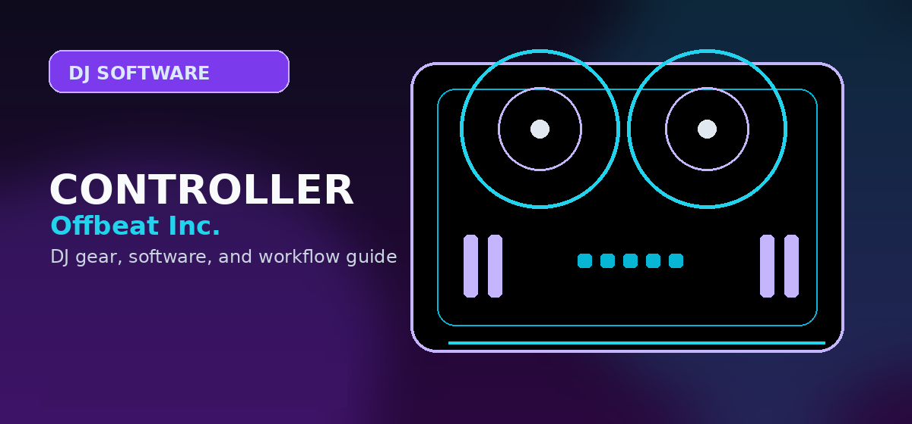

Best DJ Controllers for rekordbox
A rekordbox controller guide for beginners, club-prep DJs, AlphaTheta users, and buyers choosing between FLX2, FLX4, GRV6, FLX10, and standalone systems.

Disclosure: This page uses affiliate links. We may earn a commission at no extra cost to you. Full disclosure →
A rekordbox controller guide for beginners, club-prep DJs, AlphaTheta users, and buyers choosing between FLX2, FLX4, GRV6, FLX10, and standalone systems.
Best rekordbox controller recommendations
rekordbox is the cleanest software path for readers who want AlphaTheta/Pioneer DJ continuity, USB preparation, and a layout that maps naturally to club gear. The right controller depends on whether the buyer is practicing at home, building a mobile rig, or preparing for CDJ/XDJ workflows.
DDJ-FLX4
The FLX4 is the default recommendation because it gives beginners the right layout, software continuity, and enough I/O for a real learning setup. It remains a safer first buy than ultra-cheap controllers if the buyer is serious.
DDJ-FLX2
The FLX2 is the cheapest modern AlphaTheta route into rekordbox and app-based DJing. It works well for casual practice and streaming-supported entry workflows, but it should be positioned below the FLX4 for serious learners.
DDJ-GRV6
The GRV6 is for DJs who have outgrown simple two-channel practice and want CDJ-sized jogs, four channels, Beat FX, and the new Groove Circuit remix workflow inside rekordbox.
XDJ-AZ
The XDJ-AZ is the premium standalone continuation of the rekordbox/AlphaTheta path. It is a high-ticket upgrade path for serious rekordbox users, not a beginner controller substitute.
rekordbox controller ladder
| Stage | Controller direction | Why it fits |
|---|---|---|
| Try DJing | DDJ-FLX2 | Low-cost, compact, app-friendly entry point. |
| Learn properly | DDJ-FLX4 | Better long-term beginner layout and stronger I/O. |
| Step up creatively | DDJ-GRV6 / FLX10 | Four channels, bigger controls, creative effects, and stems/remix workflows. |
| Practice club workflow | XDJ-AZ / XDJ systems | Standalone feel, larger screens, USB/library prep, professional outputs. |
Where streaming fits in rekordbox
Streaming support makes rekordbox more accessible for beginners and more useful for casual practice, but it does not remove the need for clean local files when preparing for paid or club sets. Use streaming to test music, discover songs, and build practice sets; use verified files for mission-critical gigs.
rekordbox controller scoring method
rekordbox controller pages should be scored by continuity: how cleanly the buyer can move from practice to preparation to performance. That gives the FLX4 a strong beginner position, the GRV6 a strong creative step-up position, and the XDJ-AZ a premium standalone position. It also explains why the FLX2 is valuable but should not outrank the FLX4 for serious learners.
The key distinction is whether the reader wants to learn DJing casually or prepare for AlphaTheta/Pioneer-style club workflows. Casual readers can start from streaming, app support, and compact hardware. Club-prep readers should think about library organization, cue points, grid analysis, USB workflow, and how the controller layout maps to CDJ/XDJ habits.
Use the Apple Music and Spotify pages when streaming is the main driver, but do not let streaming support dominate the hardware recommendation. A controller is still a physical workflow decision: outputs, controls, jog size, browsing, pads, build, portability, and upgrade path remain more important than a single service logo.
rekordbox upgrade traps to avoid
rekordbox controller shopping is easiest when you separate practice gear from club-prep gear. A compact controller is enough to learn phrasing, EQ, hot cues, and basic transitions. A club-prep controller should make the controls feel closer to AlphaTheta/Pioneer DJ hardware, with better jog wheels, clearer effects access, and a library workflow that reinforces export habits.
Before buying, confirm whether your features require a plan, whether mobile support matters to you, and whether your controller can grow with your library. A controller that is perfect for week one may be too small for a DJ who starts recording mixes, practicing four-channel blends, or preparing USBs for standalone systems.
rekordbox controller buying checklist
For rekordbox, the strongest controllers are the ones that teach habits that carry into AlphaTheta/Pioneer DJ players and club-style layouts.
- Layout continuity: prioritize transport, mixer, FX, and browser controls that feel close to common Pioneer/AlphaTheta workflows.
- Library preparation: build playlists, cues, beatgrids, and export habits early so you are not dependent on one controller.
- Upgrade path: if you expect to play booths or clubs, choose hardware that makes the jump to CDJs or standalone systems less disorienting.
Official product and support pages
Use rekordbox compatibility and AlphaTheta product pages before relying on retailer listings.
FLX4 is the default beginner pick; XDJ-AZ is the no-laptop ecosystem pick.
GRV6 makes more sense for performance control than for pure beginner learning.
Use these official pages to confirm current specifications, software compatibility, and support details before buying.
Frequently Asked Questions
What is the best rekordbox controller for beginners?
The DDJ-FLX4 is the best first serious rekordbox controller. The DDJ-FLX2 is the cheaper compact option for casual starters.
Is the DDJ-GRV6 better than the FLX4?
It is more powerful and creative, but it is not the simpler first purchase. It makes more sense after a beginner knows they want four channels and deeper performance tools.
Should rekordbox users buy standalone gear?
Standalone gear is worth considering once the user is committed to DJing and wants club-style preparation or laptop-free performance.
What should I check before choosing DJ software?
Check controller compatibility, library tools, streaming support, stem features, recording limits, subscription cost, and whether the software matches the venues or hardware you expect to use.
Can I start with free DJ software?
Yes, but free versions often restrict hardware, recording, effects, or advanced library features. Use free software to learn basics, then upgrade when the limitations slow you down.
Rekordbox buyer fit check
Choose a rekordbox controller when the buyer wants AlphaTheta/Pioneer continuity, USB/library prep, or the most direct club-style learning path. If the priority is scratch performance, stems routines, or open-format mobile work, compare against Serato controllers before buying. If the price has moved above the expected bracket, cross-check controllers under $500 or controllers under $1000 so the recommendation still fits the real checkout price.